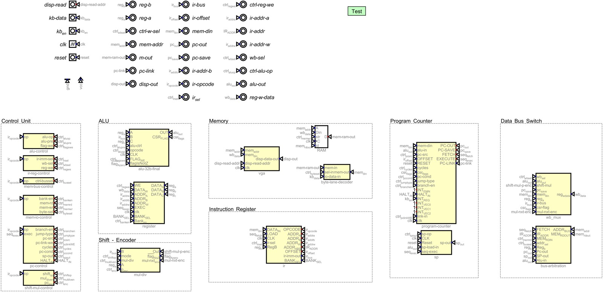

Dispatch · Datapath
Multiplication slower than a half-asleep builder
Naïve shift-add takes forever. A Wallace tree eats the board. The answer is a priority-encoder loop that jumps over zeros.
One of the biggest hurdles has been hardware multiplication and division. The naïve approach — shift, add, accumulate, or shift and subtract for division — is easy and architecturally painful. It reuses the existing ALU and shifter, which is good news for fabrication. It also clocks in at roughly thirty-two cycles. At that speed the computer is slower at multiplying than I am when half-asleep.
Priority encoder and a feedback loop
The ALU compares both inputs. The smallest number loads into the multiplier register that feeds the encoder; the largest into the multiplicand. The encoder identifies the lowest significant one-bit and directs the barrel shifter to shift by that index — a 2ⁿ multiply in a single cycle.
Because the encoder is combinational and has no memory, a feedback loop subtracts the last shifted value from the multiplier, clearing the bit just processed. That value latches and returns to the encoder for the next cycle.
Why not a tree
A Wallace tree or array multiplier would take more space than the entire core ALU and introduce hundreds of parts for a speed gain this machine does not need. Jumping zeros is O(1) in the best case and O(16) in the worst, without a mountain of extra gates. The same rhythm tunes to divide: shift, then conditionally subtract. Average under five to ten cycles. No sixty-cycle loop. No hundred extra chips.
From the build
The work behind the words.
{kind=link}

Datapath and control connected in Digital.